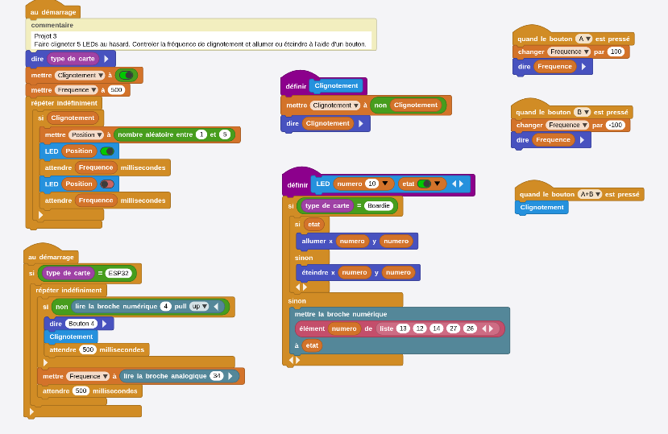

<h1>Projet 2 ! </h1>
<br>
<a href="https://microblocks.fun/run/microblocks.html#scripts=GP%20Scripts%0Adepends%20%27LED%20Display%27%0A%0Aspec%20%27%20%27%20%27Allumer%27%20%27LED%20_%20_%27%20%27num%20bool%27%2010%20true%0Ato%20Allumer%20numero%20etat%20%7B%0A%20%20if%20%28%28boardType%29%20%3D%3D%20%27Boardie%27%29%20%7B%0A%20%20%20%20if%20etat%20%7B%0A%20%20%20%20%20%20%27%5Bdisplay%3AmbPlot%5D%27%20numero%20numero%0A%20%20%20%20%7D%20else%20%7B%0A%20%20%20%20%20%20%27%5Bdisplay%3AmbUnplot%5D%27%20numero%20numero%0A%20%20%20%20%7D%0A%20%20%7D%20else%20%7B%0A%20%20%20%20digitalWriteOp%20%28at%20numero%20%28%27%5Bdata%3AmakeList%5D%27%2013%2012%2014%2027%2026%29%29%20etat%0A%20%20%7D%0A%7D%0A%0Aspec%20%27%20%27%20%27Clignotement%27%20%27Clignotement%27%0Ato%20Clignotement%20%7B%0A%20%20Clignotement%20%3D%20%28not%20Clignotement%29%0A%20%20sayIt%20Clignotement%0A%7D%0A%0Ascript%201646%204%20%7B%0AwhenButtonPressed%20%27A%27%0AFrequence%20%2B%3D%20100%0AsayIt%20Frequence%0A%7D%0A%0Ascript%201643%20156%20%7B%0AwhenButtonPressed%20%27B%27%0AFrequence%20%2B%3D%20-100%0AsayIt%20Frequence%0A%7D%0A%0Ascript%201651%20326%20%7B%0AwhenButtonPressed%20%27A%2BB%27%0AClignotement%0A%7D%0A%0Ascript%201146%2069%20%7B%0AwhenStarted%0Aif%20%28%28boardType%29%20%3D%3D%20%27ESP32%27%29%20%7B%0A%20%20forever%20%7B%0A%20%20%20%20if%20%28not%20%28digitalReadOp%204%20%27up%27%29%29%20%7B%0A%20%20%20%20%20%20sayIt%20%27Bouton%204%27%0A%20%20%20%20%20%20Clignotement%0A%20%20%20%20%20%20waitMillis%20500%0A%20%20%20%20%7D%0A%20%20%20%20Frequence%20%3D%20%28analogReadOp%2034%29%0A%20%20%20%20waitMillis%20500%0A%20%20%7D%0A%7D%0A%7D%0A%0Ascript%20639%20-51%20%7B%0AwhenStarted%0Acomment%20%27Projet%202%0AFaire%20clignoter%205%20LEDs%20au%20hasard.%20Controler%20la%20fr%C3%A9quence%20de%20clignotement%20et%20allumer%20ou%20%C3%A9teindre%20%C3%A0%20l%27%27aide%20d%27%27un%20bouton.%20%27%0AsayIt%20%28boardType%29%0AClignotement%20%3D%20%28booleanConstant%20true%29%0AFrequence%20%3D%20500%0Aforever%20%7B%0A%20%20if%20Clignotement%20%7B%0A%20%20%20%20Position%20%3D%20%28random%201%205%29%0A%20%20%20%20Allumer%20Position%20true%0A%20%20%20%20waitMillis%20Frequence%0A%20%20%20%20Allumer%20Position%20false%0A%20%20%20%20waitMillis%20Frequence%0A%20%20%7D%0A%7D%0A%7D%0A%0Ascript%20642%20506%20%7B%0Ato%20Allumer%20numero%20etat%20%7B%7D%0A%7D%0A%0Ascript%201072%20507%20%7B%0Ato%20Clignotement%20%7B%7D%0A%7D%0A%0A">Projet #2</a>
<br>

